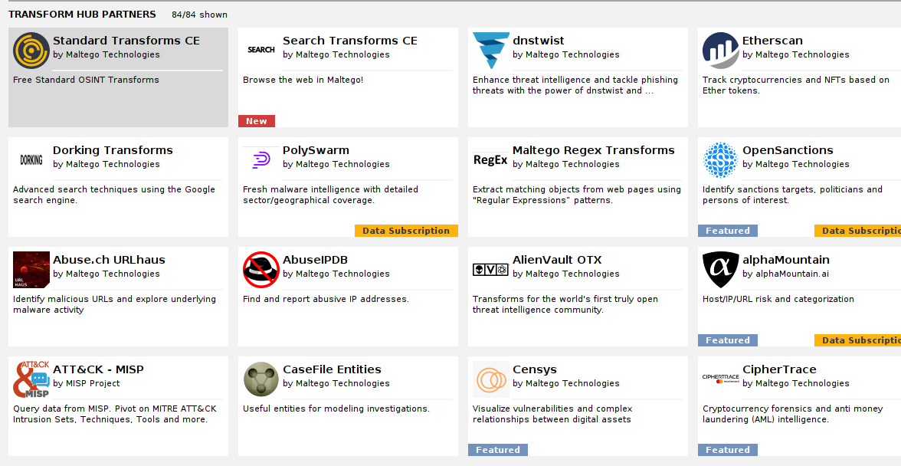
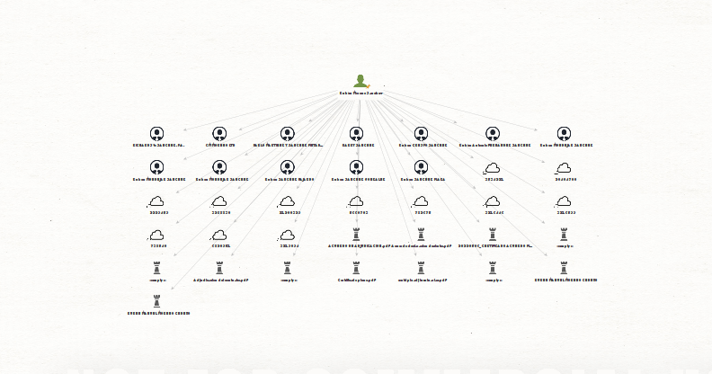

Maltego
Una de las herramientas más amplias y profesionales de recopilación de información pasiva.
La vamos a instalar en kali.
sudo apt install maltego
Nos pedirá registrar una cuenta en su web, es gratis no hay problema así que una vez configurado todo tenemos algo como esto:

Vamos a revisar actualizaciones:

Vamos a comenzar con su uso entendiendo un par de conceptos sobre el mismo
.- Transformador:
Todas las consultas hacen una query a una base de datos y ejecutan unos comandos que indexan la información. Estas consultas se denominan "transforms" que se ejecutan sobre diferentes bases de datos y que podemos asociar a diferentes entidades.
Empresas de terceros pueden hacer sus propios transformers para hacer querys a sus bases de datos.


Instalamos algunas que nos interesen teniendo en cuenta que algunas como shodan, virustotal, etc pueden pedir API keys.
Creamos un nuevo grafo.
- Grafos:
Se trata un lienzo en el podremos arrastrar entidades que se tratan de diferentes tipos de información sobre los que podremos buscar en fuentes públicas haciendo uso de los transformadores.

Podemos ejecutar un análisis utilizando estos transformadores para recaudar datos de un nombre concreto o una entidad, incluso asociar una persona o serie de personas a una entidad y realizar una busqueda más concreta, etc.
Podemos exportar el reporte: